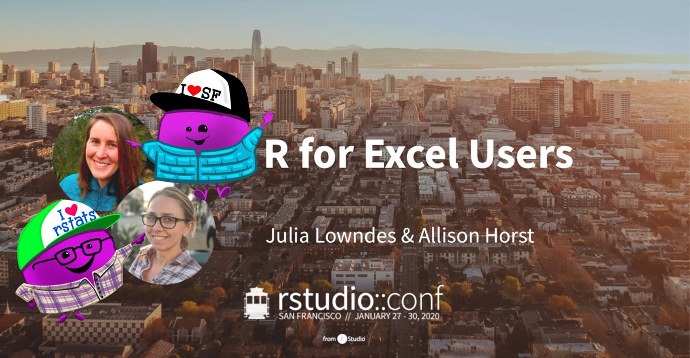

R for Excel Users Workshop

tl;dr: all workshop materials are available here:
GitHub: https://github.com/rstudio-conf-2020/r-for-excel
Book: https://rstudio-conf-2020.github.io/r-for-excel/
Slides
Cross posted: https://education.rstudio.com/blog and https://www.openscapes.org/blog/
License: CC BY-SA 4.0
Background
We were thrilled to co-teach the R for Excel Users workshop at rstudio::conf(2020)! From early on in our weekly early-morning work sessions and brainstorming hikes, we knew that our R for Excel Users workshop would not be about wholesale translating Excel operations into R. Instead, it would be a more holistic approach to reproducible analyses with R – a friendly introduction to becoming a modern R user.

Our philosophy was always about empowering our attendees to continue learning R after our workshop – and so that they would be excited about it. We wanted to teach not only the skillsets of the modern R user, but also the habits and mindsets for working in a reproducible and collaborative way. Through hands-on experience our attendees would build skills and confidence at the workshop, and through stories and packages from the #rstats community, they would build the mindset to expect what they want to do is possible and have a good start to finding it.
Thus, attendees would learn:
- coding with best practices (RStudio/tidyverse)
- collaborative bookkeeping (Git/GitHub)
- reporting and publishing (RMarkdown/GitHub)
And they would build the mindset:
- to expect that what they want to do is possible
- to have confidence they can find it
- to continue learning with supportive community
- to enable others
Focusing on #rstats communities at our workshop was especially important to us because of our audience. These folks were coming to a 2400-person conference all about R – and they did not yet know R! That seems scary! Anything we could do to not only teach them about reproducible workflows but also make the conference easier to navigate for a newcomer we felt was time well spent. Thus, we deliberately focused time on R learning communities that they would see and can get involved in at the conference and afterwards. And, we included a discussion about how Twitter is a legit tool for R, and how to get started.
Teaching at RStudio::conf!
We taught R for Excel Users at RStudio::conf(2020) with our amazing TAs (and fellow Santa Barbara R-Ladies) Jessica Couture and Jamie Montgomery! We jumped into Day 1 of the workshop with 25 optimistic participants from industry, government offices, non-profits, and even several RStudio employees.

Our workshop assumed no previous experience with R or RStudio. After setting the tone and expectations of the workshop with how R is like the Force from Star Wars, we spent the first two sessions on meeting, exploring, and setting up our tools, including:
- Meeting the RStudio IDE, Hello R Markdown!, Packages, Functions
- Working between GitHub and R projects
With Jessica and Jamie’s awesome troubleshooting, we were all off and running at the end of Session 2 with RStudio, R Markdown, and GitHub and installed, running, and somewhat familiar. Of course after getting set up with our software, we had work to do! We spent the rest of the day:
Our fearless attendees returned on Day 2, with a chorus of “Alligator mouth dash” (<-) in response to Alison’s question “How do we assign an object in R?”. We immediately jumped into coding by:
- Reshaping, separating and uniting things with tidyr
- Filtering and joining data
- Getting help, #rstats communities, and collaborating/fixing merge conflicts in GitHub
- Synthesis of the skills and tools we’d learned
Our final session was revisiting and practicing all that we had learned throughout the workshop while participants also collaborated on RMarkdown files with each other through GitHub.
The vibe throughout the workshop was fun and lighthearted, which is exactly what we were hoping for. In addition to “Alligator mouth dash”, my favorite moment in the whole workshop was an audible whisper (“very nice!”) from someone using separate() for the first time. A close second was the cheers for janitor::clean_names() and Allison’s responding, “Yes, this is worth cheering over!”. Our attendees were hard-working folks with a great attitude and sense of humor, who are now equipped for more exciting steps in their R journey.

What’s next
We loved developing and teaching R for Excel Users, and hope to do it again. Our course materials evolved quite a bit throughout months of development, and were hugely helped by a pilot workshop we ran at UC Santa Barbara in early December. Even so, there are little things we would like to iron out and improve upon for next time. And we will also update the Book with images from the Slides so that the Book is completely self-contained and the Slides are a bonus, rather than a necessity.
We also got feedback that we should change the name of the course because while it has some framing from Excel, it is certainly not limited to Excel Users. This seems like a good idea. When we were first talking to RStudio’s Alison Hill about the workshop, we discussed how it could be somewhat of a precursor to Jenny Bryan and Jim Hester’s What They Forgot to Teach You About R – ours being What You Should Know When You Learn R. Jenny and Jim’s have a great acronym, WTF, so I have been thinking about names. I learned from Jenny that WTF was a welcome byproduct that came after they came up with the workshop name, but I have to approach it as a backronym. I’ve had many terrible ideas, but! Through cocktail chats at the conference with Charlotte Wickham and Hannah Frick, we landed on TLDR being best. I love Charlotte’s suggestion of Take a Leap and Dive into R or my less-great Time to Learn Data analysis in R. This is an ongoing pursuit, and suggestions are very welcomed :).
Allison Horst
Assistant Teaching Professor
My teaching interests are data science, statistics, and science communication.